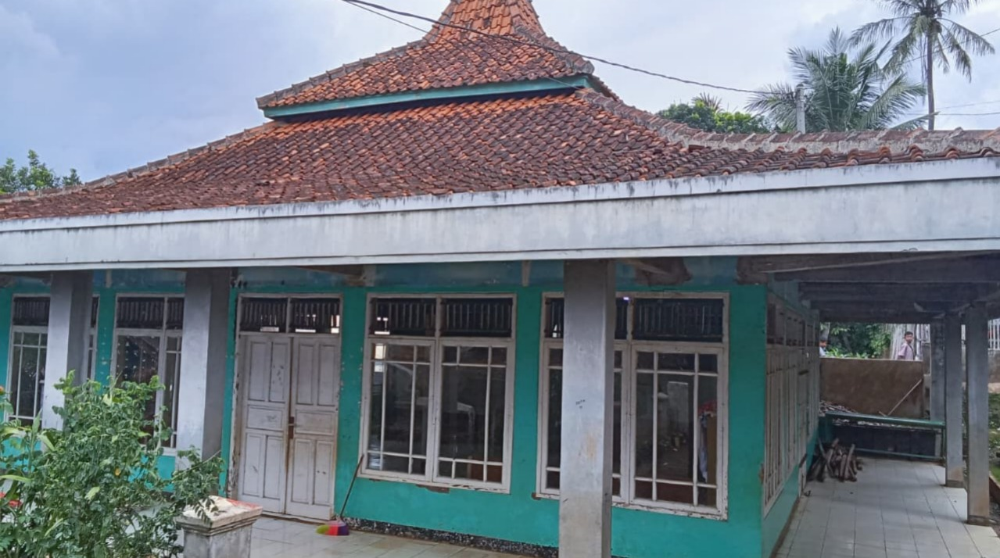

Al-Barokah
Harapan agar madrasah menjadi jalan turunnya keberkahan bagi santri, guru, dan masyarakat sekitar.
Mengenal lebih dekat sejarah, visi misi, dan struktur pengelola MDTA Al-Barokah.

Didirikan tahun 2026 sebagai wujud nyata program kerja Yayasan Bina Insani Cendekia Al-Barokah, MDTA Al-Barokah hadir untuk menyediakan wadah pendidikan agama Islam yang mudah diakses oleh anak-anak usia sekolah dasar di lingkungan Kampung Cigadog. Kehadirannya menjawab keterbatasan akses masyarakat setempat terhadap pendidikan diniyah, baik dari segi fasilitas, biaya, maupun tenaga pengajar — sehingga anak-anak dapat memperoleh pendidikan agama yang layak serta mampu membaca dan memahami Al-Qur'an sebagai bekal hidup mereka.
Memberikan tambahan pendidikan agama Islam kepada anak-anak usia sekolah dasar agar memiliki pemahaman keagamaan yang baik, benar, dan komprehensif.
Membentuk generasi yang taat beribadah dan berakhlak mulia, membantu orang tua serta sekolah formal membimbing anak di era modern, dan menjadi lembaga diniyah nonformal yang tertib administrasi bersinergi dengan Kementerian Agama.
MDTU Al-Barokah hadir sebagai pelengkap pendidikan formal untuk menumbuhkan generasi yang beriman, berakhlak, dan cinta Al-Qur'an.
Harapan agar madrasah menjadi jalan turunnya keberkahan bagi santri, guru, dan masyarakat sekitar.
Melengkapi pendidikan formal dengan fondasi keimanan, ketakwaan, kecintaan pada Al-Qur'an, dan akhlakul karimah.
Melambangkan rukun Islam dan Pancasila: membentuk anak yang saleh, berilmu, serta cinta tanah air.
Susunan pengurus MDTU Al-Barokah berdasarkan Berita Acara Rapat Pembentukan Pengurus Yayasan Bina Insani Cendekia Al-Barokah.